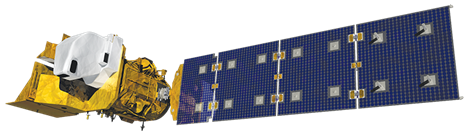
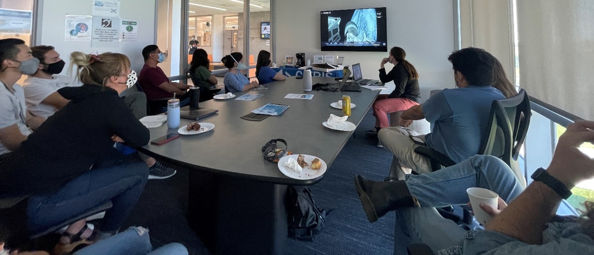

Landsat-9 Launch LIVE
October 27, 2021
What is LandSat-9 and why is it important?
Launched into orbit on September 27th, 2021, Landsat-9 is NASA’s first satellite to take images of the earth in 13 years. Continuing the nearly 50-year legacy of providing tremendous coverage and detail of Earth’s surface, the satellite will work in tandem with Landsat-8 to provide temporal coverage of observations and image the entire Earth every eight days, providing over 700 images per day.
The data provided by the Landsat satellites are essential for informed land use decisions and observations on climate change. Currently, the data provided displays information about Earth’s vegetation, land use, coastlines and surface water, and much more. Over the past half century of collected data depicts the history of how the planet has changed and natural disturbances such as fires, hurricanes, and even insect outbreaks that have occurred. Over time, researchers working with Landsat data are able to extend the ability to measure changes on the global land surface at a scale where we can even separate human and natural causes of change.
A rendering of the Landsat 9 spacecraft. Image credit: Northrup Grumman.
The Inventor of Landsat, Virginia T. Norwood
Born in 1927, Virginia Norwood grew up with a high aptitude with numbers and logic puzzles. Like many American women at the time, she was met with societal barriers throughout her life: being told to apply her strengths as a librarian by her high school guidance counselor. graduated Salutatorian from her high school Norwood attended Massachusetts Institute of Technology in 1944. After graduation, Norwood found it very difficult getting hired as a woman, as she would often be met with incredulity of her abilities over a man, and asked to make promises to not get pregnant if hired.
In 1948, she found an opportunity to work at Evans Signal Lab, where she designed and patented the first device to accurately calculate wind velocity above 100,000 ft, making long-term weather prediction possible for the first time. She would later go on to design and patent a novel and long classified tracking antenna using polarization in the early 1950s.
Norwood continued her work in the field of microwave antennas, creating IFF antennas at the MIT Rad Lab. At Hughes Aircraft, where she rose to leadership positions, Norwood designed communications equipment for the Surveyor, so it could receive commands and send images and data back to Earth.
After the Surveyor project, Norwood took a step back from weaponry and space exploration to pursue a new project--a satellite that would observe Earth and monitor its resources. Led by NASA and the USGS, Norwood scrapped initial plans for an RBV camera, proposing to utilize a Multispectral Scanner (MSS) instead. Hughes Aircraft supported the scanner with funding and Norwood overcame sceptics through high quality images of famous places: her test of the MSS at Yosemite Valley and San Francisco led to a both-and approach. NASA resolved the conflict by utilizing both the RBV and MSS on launch of Landsat 1 on July 23, 1972. The RBV camera nearly caused mission-ending complications, while Norwood’s MSS held up and continued sending high quality data. Norwood would continue to work on the next four versions of Landsat, all with versions of her MSS.
Landsat-9 Launch Livestream at UC Merced
Landsat-9 Launch Livestream Party at UC Merced. Photo credit: Julia Burmistrova.
CITRIS at UC Merced hosted a “Ready for Blast Off” watch event with undergraduates, graduate students, and staff celebrating the launch. With masks on and donuts and coffees in hand, the satellite afficionados sat in anticipation as the timer counted down. The group discussed topics regarding SpaceX’s Starlink satellites and renewable energy aviation. Live on site, Dr. Erin Hestir shared the experience and energy from Vandenburg Air Force Base via zoom.
When the time for launch arrived, the group counted down with the broadcast from NASA tv, “10, 9, 8, …, 3, 2, 1.” The group watched as the Atlas V rocket took off and listened in on rumbling from Dr. Hestir’s end. They remarked and were awed by the speed of the rocket, how quickly it reached an altitude of 437 miles above Earth’s surface, and the beautiful feed of the boosters detaching from the main body and falling back to Earth.
Earth Observation at UC Merced
Dr. Erin Hestir’s Earth Observation and Remote Sensing lab (EORS) has a wide variety of projects that utilize Landsat imagery to investigate the impacts of climate change on Earth’s ecosystems. The EORS lab group’s research has a particular focus on aquatic ecosystem, ranging from arctic to tidal wetlands, estuaries, lakes, and rivers.
Tasos Tentoglou, a senior in Environmental Engineering, and Brittany Lopez Barreto, a 4th year PhD student in Environmental Systems, have both used Landsat to investigate the impacts of wildfires on California terrestrial and aquatic environments. Over the past few decades, the Western U.S. has seen a record number of wildfires. These large wildfires, intensified by climate change, leave significant impacts upon many ecosystems. Tasos has used Landsat 8 to understand the Mendocino Complex Fire burn scar to formulate insights of wildfire impacts on land albedo and albedo recovery. Monitoring and understanding water quality responses to watershed dynamics and wildfire is an important source of information for water managers that is necessary to develop and prioritize mitigation strategies aimed at ensuring water quality and water supply. Brittany has used Landsat 5, 7, and 8 to investigate post-wildfire effects on water quality by deriving multi-decadal water quality trends in California lakes and supply reservoirs in conjunction with occurrence, frequency, and intensity of wildfires in adjoining watersheds. Brittany created a time series of water quality trends for variables, such as turbidity since 1984.
EORS Assistant Research Specialist, Julia Burmistrova, has been using Landsat to examine the effects of lithium salt mining on deserts. The increased consumer demand for lithium-ion batteries is leading to increased lithium mining globally. For mining operations, a previously bare desert is converted to shallow salt evaporation ponds, which changes the reflectivity of the desert. Landsat provides consistent measurements of reflected and emitted energy at the spatial resolution necessary to quantify seasonal albedo changes due to lithium mining. For this project, Julia and collaborators used Landsat time-series data to monitor the expansion of lithium salt ponds over time and long-term changes in desert surface albedo.
Postdoctoral scholar Dr. Dulcinea Avouris is currently using Landsat 8 data to create turbidity and Colored Dissolved Organic Matter (CDOM) products for the San Francisco Delta. These water quality parameters are then used to investigate spatio-temporal (that is, location and time) variability in the Delta. In addition, the turbidity & CDOM retrievals are used as optical proxies for modeling the distribution of mercury and methylmercury throughout the Delta. Methylmercury bioaccumulates in fish and could be harmful to humans if they eat the fish or drink the water. The high spatial resolution of Landsat is key to visualizing and assessing optical parameters in smaller water bodies.
Learn more
- Follow Ladies of Landsat on Twitter for Earth Obsrevation research and commentary
- NASA Landsat Science
- NASA: The Mother of Landsat
- USGS Landsat Instagram posts great shots from the satellite
Collaborators
- Peter Sou, Computer Science Engineering ‘22, CITRIS NexTech Robotics Educator
- Bailey Morrison, PhD, Post-doctoral researcher
- Tasos Tentoglou, Environmental Engineering ’22, undergraduate research assistant
- Julia Burmistrova, research specialist
- Brittany Lopez Barreto, PhD Student
- Dulcinea Avouris, PhD, Post-doctoral researcher, Earth Observation and Remote Sensing Lab